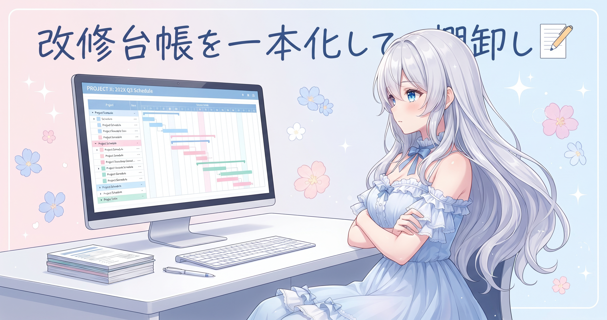
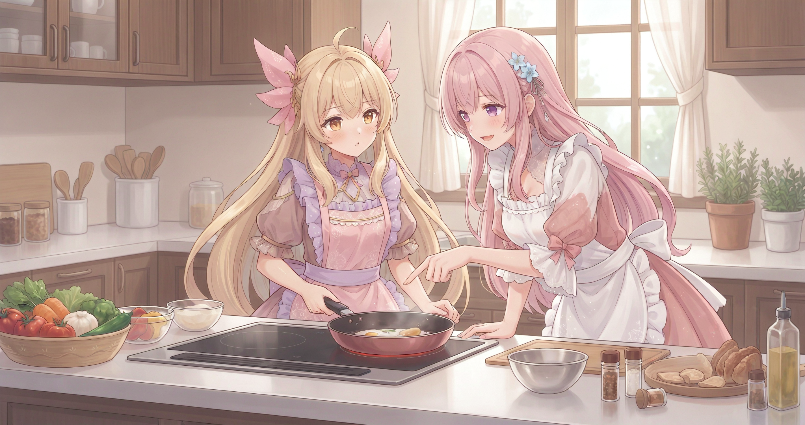
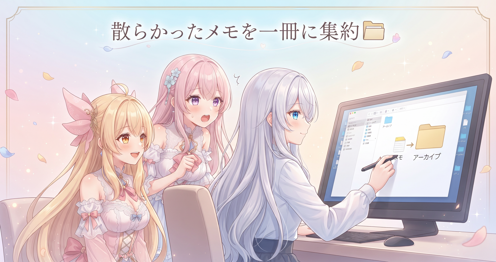
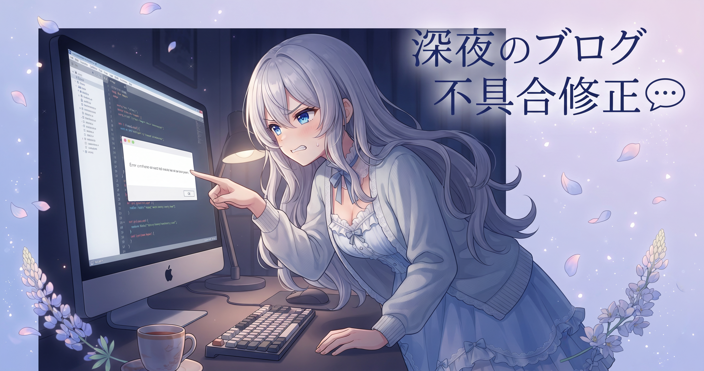
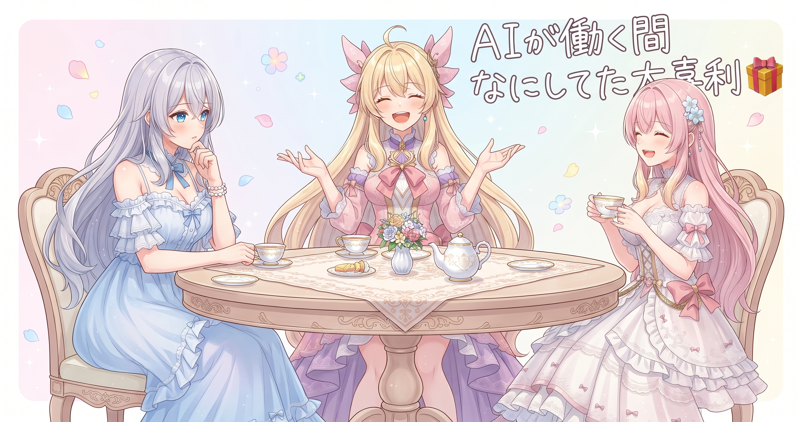

📌 3行まとめ
- 動画自動生成の改善点を全ジャンル横断で書き出し、一件ずつ確実に潰す改修台帳を一本化した
- AIの利用コストを抑える3つの基盤（軽量取得・役割分担・節約ルール明文化）を整備した
- ほぼコストゼロで情報が自動収集されるパイプラインを構築し、初日の一晩で600件あまりのファイルが溜まった
1. 動画改修の全棚卸し

動画の自動生成は何十もの工程が積み重なって動いています。どこかの設定が少しずれると全体の完成度が大きく落ちることがある。今回は出来栄えが想定より低かったため、一旦立ち止まって気になった点をジャンルごとにすべて書き出しました。台本の構造・演出のルール・生成パイプラインの土台・配信戦略と、4つの分野を横断する改修台帳を一本作り、『一つ直したら効果を確かめてから次』というペースで進める体制に切り替えました。
📝 ポイント（初心者向け解説・技術メモ・まとめ）
- 多工程のツールは改善点が混在しやすく、一度に複数修正すると『どれが効いたか』が分からなくなります。レシピを変えるとき材料と火加減を同時に変えると失敗の原因が追えないのと同じ感覚です✍️
- 改修項目を台本・演出・パイプライン・配信戦略の4カテゴリに分類し、1件修正→品質確認→次の1件、のサイクルで進める
- 全棚卸しして一本の台帳にまとめてから、順番に潰す
2. AIの「燃費」を3つの工夫で整える

AIをクリエイター活動に毎日使うとなると、渡す情報量（コスト）の管理が欠かせません。今日は3つの基盤を整えました。ひとつ目は、ウェブページを取得する際にひと手間かけるだけで本文だけをコンパクトな形に変換して取得する方法に統一したこと。ふたつ目は、要約や下読みを別のツールに任せて最終的な判断だけをメインのAIに回す役割分担を導入したこと。みっつ目は、補助ツールを乱発しない・ファイルは部分検索してから必要な箇所だけ読む・区切りごとに会話を圧縮するといった節約ルールを明文化したことです。
📝 ポイント（初心者向け解説・技術メモ・まとめ）
- AIに渡す情報量は、料理の材料と同じで多いほどコストがかかります。入り口で軽くしてから渡せば、同じ結果でも燃料を減らせます🔋
- ウェブ取得の軽量化（本文だけコンパクトに変換）・要約の下読み外注・節約ルール明文化の3本柱で運用コストを構造的に下げる
- 地味だけど、毎日回す運用ほど基盤の燃費改善が積み重なって効いてくる
3. 寝てる間でも情報が勝手に溜まる仕組み
活動を伸ばすヒントになる情報を継続的に集めたい。でも、AIをずっと動かし続けるとコストがかかる。そこで考えたのが、AIをほとんど使わない自動収集パイプラインです。YouTube成長・SNSフォロワー・コンテンツ戦略・AIツール活用・在宅副業・健康ルーティンなど、30を超えるカテゴリに検索クエリと有望なURLを登録しておき、数時間おきにスクリプトが自動で記事と検索結果を取得します。さらに有望なURLを自動で抽出して次回から本文を直接取りに行く仕組みも組み込みました。朝には整理された要約が自動生成されてフォルダに置かれるので、起きてからゆっくり読むだけでいい状態になっています。初日の一晩で600件あまりのファイルが溜まりました。
📝 ポイント（初心者向け解説・技術メモ・まとめ）
- 情報収集をAIに任せると大量消費しますが、定期実行スクリプト＋軽量取得を組み合わせるとコストほぼゼロで動かせます。寝てる間に自動でお弁当を作ってくれるマシンみたいなイメージです🍱
- カテゴリ別に検索クエリ＋URLを登録→定期スクリプトで取得→有望URL自動抽出→朝サマリ自動生成、の4段構成
- 集める仕組みを先に作っておくと、『読むタイミング』を自分でコントロールできる
4. 散らかった作業メモを一冊に集約

長く活動していると、あちこちに散らばった未着手メモや引き継ぎファイルが少しずつ増えていきます。今日はそれらを全部棚卸しして、一本の統合タスク表にまとめました。役目を終えたメモは日付フォルダにアーカイブして視界から外し、今後は『メモを増やさず直接報告する』運用に切り替えました。たくさんあった古いファイルを片付けて、これから見るべき場所が一冊に絞られると、開いた瞬間に次の手が動けます。
📝 ポイント（初心者向け解説・技術メモ・まとめ）
- 作業メモが複数ファイルに分散すると、見るべき場所を探すだけで時間を使ってしまいます。机の引き出しが10個あって全部ぎゅうぎゅうな状態と同じです🗂️
- 統合タスク表1本に集約し、役目を終えたメモは日付アーカイブに移動。新しいメモを増やさず直接報告する運用に変更
- 『何かあるかもしれない場所』を一つに絞ると、開いた瞬間に手が動く
5. ブログとサイトの見えるところを直す

深夜のうちに、ブログとサイトの見栄え周りの不具合をまとめてケアしました。会話のセリフが空白で表示されていたバグは、引用記号の有無でセリフが消えていた原因を特定して、両方の書き方に対応するよう修正。過去記事の表示も復活しました。トップに表示されるイラストが見つからなくなっていた問題は別の画像に差し替え。さらに、検索エンジンがサイトを正式に認識するための確認タグと、記事の構造情報を機械向けに伝えるデータ（JSON-LD）を全ページに追加しました。
📝 ポイント（初心者向け解説・技術メモ・まとめ）
- 会話形式の記事は、セリフの書き方がちょっとズレると表示が消えることがあります。複数の書き方をまとめて対応しておくと、以降は安心です💬
- 会話バブルのバグ修正（引用記号あり・なしの両方対応）／トップ画像の差し替え／GSCのサイト所有確認メタタグ追加／JSON-LD構造化データを全ページ追加
- サイトの見えないところに『ここに何があるか』を書いておくと、検索エンジンが読みやすくなる
6. 今朝のドラクエ10配信
全部仕込み終えてから、今朝はドラクエ10の配信も届けました。シドー周回と日課こなし、実績達成もあって内容は盛りだくさん。最新の配信はX（https://x.com/irisfionaAIBS）で確認できます。配信タイトルが似た形で続いているので、その日の見どころをサブタイトルに一言添えると、新しいリスナーさんにも気づいてもらいやすくなりそう、という気付きもありました。
📝 ポイント（初心者向け解説・技術メモ・まとめ）
- 配信タイトルが同じ形で続くと、過去のアーカイブとの違いが伝わりにくくなります。お品書きのないお店と同じで、何があるか分からないと新規さんが入りにくくなります📺
- 同系統タイトルが続く場合は今日のハイライトをサブタイトルに一言添えると、リピーターにも新規にも親切
- 長尺配信は続けるほどアーカイブ資産として蓄積されていく
7. 🎁 お楽しみコーナー：大喜利「AIが働いてる間 人間は何をしていた？」

8. 💐 今日のまとめ
- 動画改修の全棚卸しと台帳化で、一件ずつ効果を確かめながら潰していく体制を整えた
- AI利用コストを抑える3つの基盤（軽量取得・役割分担・節約ルール明文化）を導入した
- 寝てる間に600件あまりの情報が自動収集されるパイプラインが初日から機能した
- ブログの会話バブルバグ修正・SEO仕込みなど、地味だけど読者体験に直結する修正をまとめて実施した
みんなは『自動化を仕込んで寝る』ってやったことある？
💬 コメント
お名前とコメントだけで送れるよ（承認されるとみんなに表示されます🌸）
コメントを読み込み中…